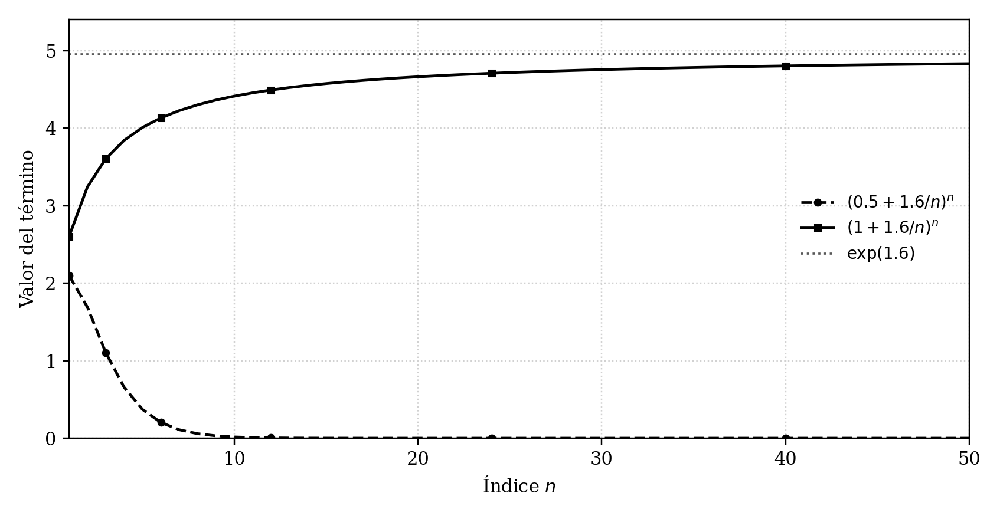
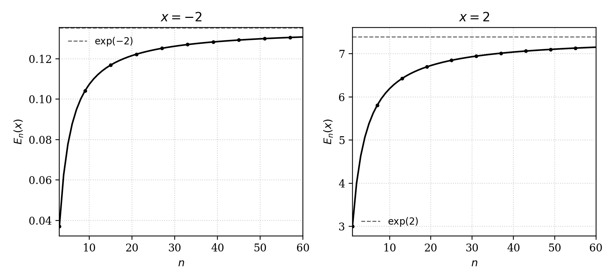
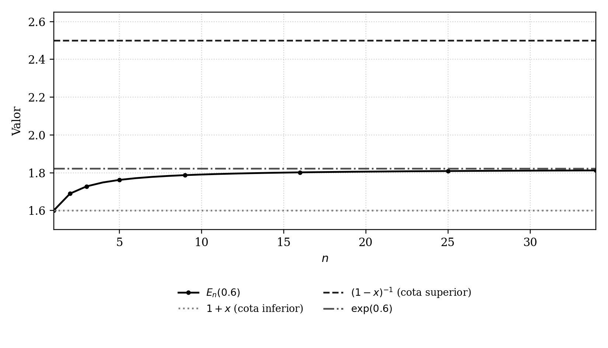
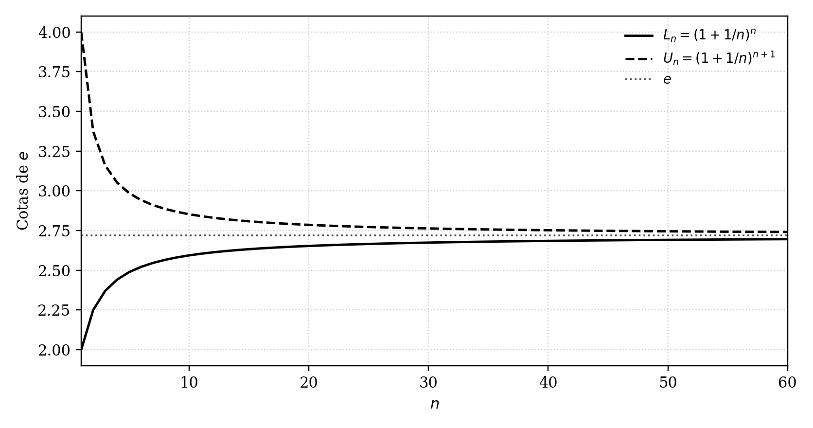
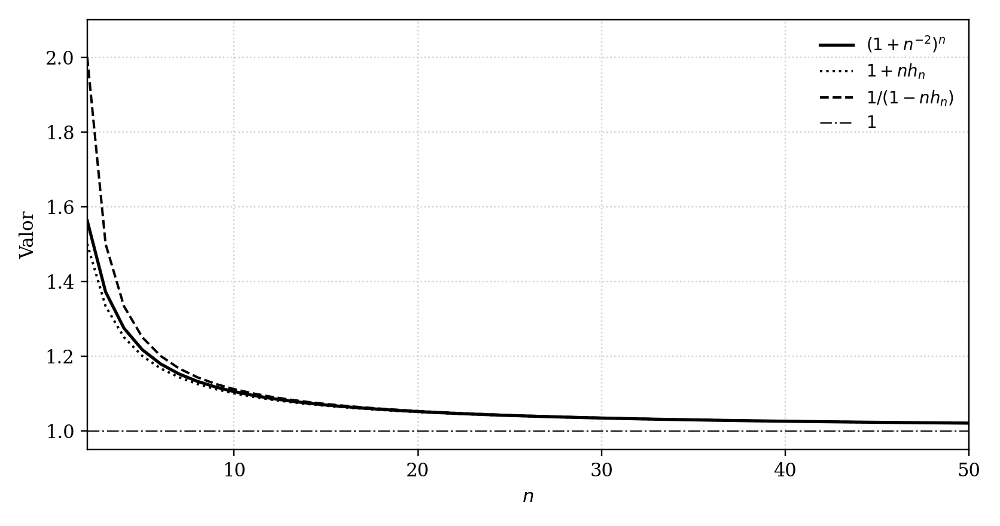
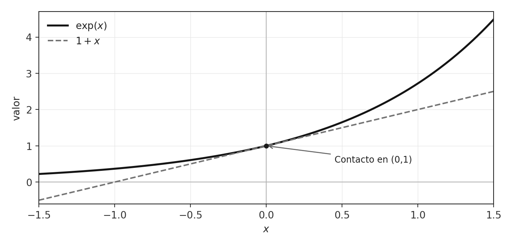
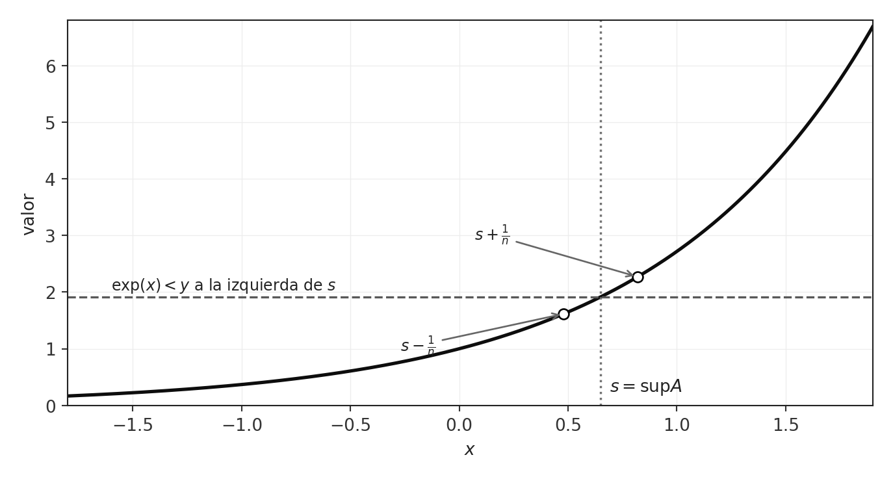
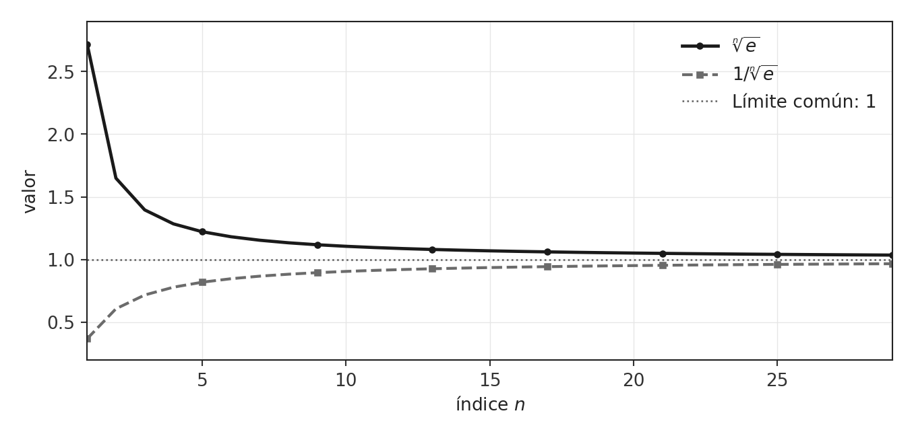
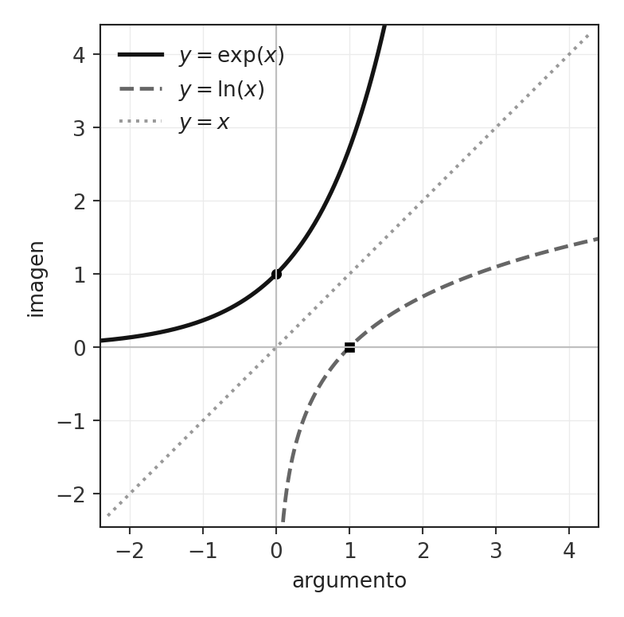
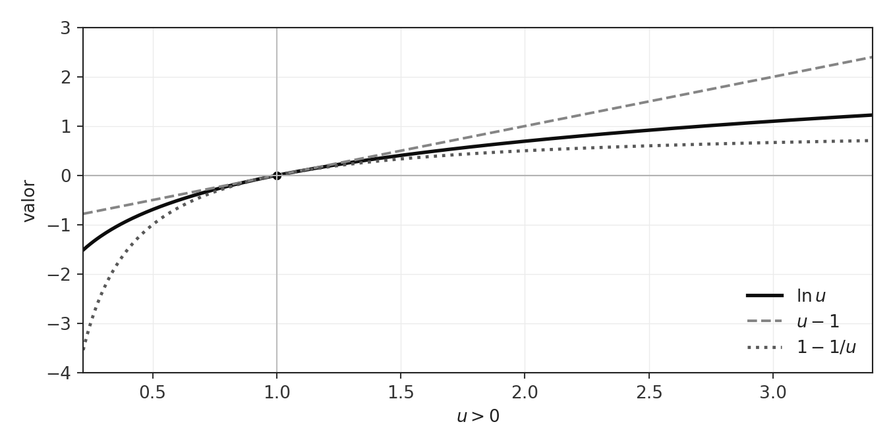

La función exponencial y su inversa logarítmica
Capítulo 12 · Parte IV. Exponenciales y logaritmos
La función exponencial se construye a partir de aproximaciones y satisface una identidad que transforma sumas en productos. La inversa logarítmica permite introducir potencias de exponente real y logaritmos en bases arbitrarias.
Grabaciones de referencia: grabación de la cátedra 11.1, grabación de la cátedra 11.2.
Procedencia de este tramo: cátedra 11.1.
De las sucesiones a una nueva función
En la cátedra (12:34–15:32). El profesor anuncia el cambio de objeto de estudio: durante las semanas 9 y 10 se aprendió a reconocer y calcular límites de sucesiones; ahora ese conocimiento servirá para construir una función. La idea central consiste en asociar a cada número real \(x\) una sucesión y, a partir de ella, un número real determinado por su límite.
Para \(x\in\mathbb R\) fijo y cada entero positivo \(n\), se considera
\[ E_n(x)=\left(1+\frac{x}{n}\right)^n. \]
El símbolo \(x\) designa el parámetro de la construcción. En cambio, \(n\) es la variable de la sucesión. Una vez fijado \(x\), se obtiene la lista \(E_1(x),E_2(x),E_3(x),\dots\), cuyos términos se aproximan a un número cuando \(n\) aumenta. La pregunta matemática fundamental es si esa aproximación posee un límite real para cada \(x\).
Definición. Para los valores reales \(x\) en los que la sucesión converge, se define
\[ \boxed{\displaystyle \exp(x):=\lim_{n\to\infty}\left(1+\frac{x}{n}\right)^n.} \]
La unicidad del límite, demostrada en la cátedra 9.2, proporciona la unicidad del valor de \(\exp(x)\). El teorema de convergencia, que ocupa la parte mayor de esta sesión, establecerá la existencia de ese valor para todo \(x\in\mathbb R\). De este modo se construye una función \(\exp:\mathbb R\to\mathbb R\).
Ampliación editorial. Al estudiar el límite solo importa el comportamiento desde cierto índice en adelante. Esta observación permite manejar todos los valores reales de \(x\): aun cuando \(x\) sea un número negativo de gran módulo, la base \(1+x/n\) se vuelve positiva cuando \(n>-x\). Desde ese índice pueden aplicarse las desigualdades necesarias.
El exponente variable y una dificultad real
Un cálculo aparente
En la cátedra (15:35–18:25). El profesor previene contra el procedimiento informal
\[ 1+\frac{x}{n}\longrightarrow 1 \qquad\Longrightarrow\qquad \left(1+\frac{x}{n}\right)^n\longrightarrow 1^n=1. \]
La conclusión propuesta carece de justificación: la operación de elevar a la potencia \(n\) también depende del índice. La base se aproxima a \(1\), mientras el exponente crece sin cota. La interacción entre estos movimientos es precisamente el problema que hay que estudiar. Para \(x=0\) la expresión vale exactamente \(1\) en cada índice; el resto de los valores de \(x\) requieren la demostración.
La advertencia se puede reformular en términos de álgebra de límites. El teorema que permite trasladar el límite a una potencia \(k\) trata un exponente natural fijo \(k\). En \(E_n(x)\) el exponente cambia al pasar del índice \(n\) al índice \(n+1\).
Un caso comparable que sí admite una estimación simple
En la cátedra (18:28–22:18). El profesor considera
\[ T_n(x)=\left(\frac12+\frac{x}{n}\right)^n. \]
La base tiende a \(1/2\). Para un \(x\) fijo, la definición de convergencia asegura que, desde algún índice \(N(x)\), se cumple
\[ \frac14\le \frac12+\frac{x}{n}\le\frac34. \]
Son números positivos, de modo que elevar a la potencia entera \(n\) conserva el orden:
\[ \left(\frac14\right)^n \le T_n(x)\le \left(\frac34\right)^n, \qquad n\ge N(x). \]
Ambas sucesiones geométricas extremas convergen a cero. El teorema del sándwich demuestra, por consiguiente,
\[ \boxed{\displaystyle \lim_{n\to\infty}\left(\frac12+\frac{x}{n}\right)^n=0.} \]
La elección de \(1/4\) y \(3/4\) cumple la función esencial de situar las bases de las sucesiones mayorante y minorante dentro del intervalo \((0,1)\). Si, por ejemplo, la base tiende a \(7/8\), pueden utilizarse bases fijas como \(13/16\) y \(15/16\), de acuerdo con la explicación de 24:52.

Figura 1 (esquema editorial). Para el mismo parámetro \(x=1.6\), la potencia con base límite \(1/2\) tiende a cero; la potencia con base límite \(1\) se aproxima a \(\exp(1.6)\). Las curvas han sido calculadas a partir de sus fórmulas, no extraídas de la pizarra.
La cota deja de ser informativa cuando la base tiende a uno
En la cátedra (22:18–29:34). Ahora, para \(0<\varepsilon<1\) y desde cierto índice,
\[ 1-\varepsilon\le1+\frac{x}{n}\le1+\varepsilon. \]
Tras elevar a \(n\):
\[ (1-\varepsilon)^n\le E_n(x)\le(1+\varepsilon)^n. \]
La cota inferior converge a cero, mientras la superior es una sucesión creciente sin cota superior. El orden obtenido permite ubicar cada término, pero sus extremos no convergen al mismo número. Por ello se necesita una cota superior que dependa de una manera más adecuada de \(n\).
Ampliación editorial. Para cualquier \(a\) con \(0<a<1\) y para \(x\) fijo,
\[ \lim_{n\to\infty}\left(a+\frac{x}{n}\right)^n=0. \]
En efecto, se elige \(r\) con \(a<r<1\); eventualmente \(|a+x/n|\le r\) y por tanto
\[ 0\le \left|a+\frac{x}{n}\right|^n\le r^n\to0. \]
La cota mediante el valor absoluto permite tratar de forma uniforme cualquier signo inicial de la base. En esta cátedra la situación crítica es el límite de base \(a=1\).
Positividad eventual y estrategia de convergencia
En la cátedra (29:35–37:00). El caso \(x=0\) produce \(E_n(0)=1\), de donde
\[\boxed{\exp(0)=1.}\]
Para cualquier otro \(x\in\mathbb R\) se comprueba la equivalencia
\[ 1+\frac{x}{n}>0 \quad\Longleftrightarrow\quad n>-x, \qquad n\ge1. \]
Por la propiedad arquimediana, existe un índice natural \(N_x\) tal que todos los \(n\ge N_x\) satisfacen \(n>-x\). Para esos índices, \(E_n(x)\) es positivo. Es preciso explicitar esta condición al operar con cocientes de términos y potencias de desigualdades; la fórmula original se encuentra definida para todo \(n\ge1\), pero la positividad utilizada en las pruebas se establece en una cola de la sucesión.
San Martín elige como método el teorema de las sucesiones monótonas acotadas: una sucesión creciente y acotada superiormente converge, y su límite es el supremo del conjunto formado por sus términos. Así, la prueba consta de dos tareas genuinamente distintas:
- demostrar \(E_{n+1}(x)\ge E_n(x)\) desde un índice suficiente;
- encontrar una cota superior real independiente de \(n\).
El teorema de monotonía y acotación se había enunciado en la cátedra 10.2. Su demostración a partir del axioma del supremo pertenece al desarrollo teórico complementario.
Demostración de monotonía
Elegir el cociente apropiado
En la cátedra (37:01–43:00). Para una sucesión de términos positivos, el signo de la diferencia \(E_{n+1}-E_n\) y la comparación del cociente \(E_{n+1}/E_n\) con \(1\) expresan el mismo orden. En este ejercicio resulta más conveniente el cociente porque sus potencias permiten una factorización apropiada.
Se parte de
\[ \frac{E_{n+1}(x)}{E_n(x)} =\frac{\left(1+\frac{x}{n+1}\right)^{n+1}} {\left(1+\frac{x}{n}\right)^n} =\left(\frac{n+x+1}{n+1}\right)^{n+1} \left(\frac{n}{n+x}\right)^n. \]
La maniobra de factorizar con exponente común \(n+1\), que el profesor presenta como una elección estratégica, conduce a
\[ \frac{E_{n+1}(x)}{E_n(x)} =\underbrace{\left( \frac{n(n+x+1)}{(n+1)(n+x)} \right)^{n+1}}_{\text{aplicable a Bernoulli I}} \frac{n+x}{n}. \]
El numerador y el denominador de la fracción que aparece dentro de la potencia difieren en \(x\):
\[ \frac{n(n+x+1)}{(n+1)(n+x)} =\frac{(n+1)(n+x)-x}{(n+1)(n+x)} =1-\frac{x}{(n+1)(n+x)}. \]
Aplicar Bernoulli I
Demostración desarrollada (43:00–53:35). Para \(m\in\mathbb N\) y \(h>-1\), la desigualdad de Bernoulli I afirma
\[ (1+h)^m\ge1+mh. \]
Tomamos \(m=n+1\) y
\[h=-\frac{x}{(n+1)(n+x)}.\]
La hipótesis \(h>-1\) se cumple cuando \(n>-x\). Para \(x\le0\) el número \(h\) es no negativo; para \(x>0\), la desigualdad \(x<(n+1)(n+x)\) se verifica para todo \(n\ge1\).
Por Bernoulli,
\[ \left(1-\frac{x}{(n+1)(n+x)}\right)^{n+1} \ge 1-\frac{x}{n+x} =\frac{n}{n+x}. \]
El factor \((n+x)/n\) es positivo desde el índice elegido. De aquí,
\[ \frac{E_{n+1}(x)}{E_n(x)} \ge \frac{n}{n+x}\frac{n+x}{n}=1. \]
Hemos demostrado que, para cada real fijo \(x\), existe un \(N_x\) tal que
\[ \boxed{E_{n+1}(x)\ge E_n(x)\quad(n\ge N_x).} \]
La monotonía eventual es suficiente para estudiar la convergencia. Los términos anteriores a \(N_x\) constituyen una parte finita de la sucesión.

Figura 2 (esquema editorial). Para \(x=-2\) y \(x=2\), las colas positivas de \(E_n(x)\) crecen hacia sus límites respectivos. La desigualdad que garantiza esta monotonía se ha demostrado algebraicamente.
Bernoulli III: una desigualdad superior
En la cátedra (57:01–1:06:10). Bernoulli I da la cota inferior
\[ E_n(x)=\left(1+\frac{x}{n}\right)^n\ge1+x. \]
Como la sucesión crece, interesa además una cota superior. El profesor la obtiene mediante otra versión de las desigualdades de Bernoulli, que denomina Bernoulli III.
Teorema (Bernoulli III). Si \(n\ge1\) y
\[-1<h<\frac1n,\]
entonces
\[ \boxed{(1+h)^n\le\frac1{1-nh}.} \]
Demostración de Bernoulli III
Demostración desarrollada. Para cada real \(h\) se tiene \(1-h^2\le1\). Si \(-1<h<1\), ambos factores \(1-h\) y \(1+h\) son positivos y, por consiguiente,
\[ (1-h)^n(1+h)^n=(1-h^2)^n\le1. \]
La primera desigualdad de Bernoulli, aplicada a \(-h\), asegura
\[ (1-h)^n\ge1-nh. \]
La hipótesis \(h<1/n\) garantiza \(1-nh>0\). Multiplicando por el factor positivo \((1+h)^n\) se obtiene
\[ (1-nh)(1+h)^n\le (1-h)^n(1+h)^n\le1. \]
Dividir por \(1-nh\) concluye la prueba. Es una desigualdad de naturaleza distinta de Bernoulli I: proporciona una mayoración de la potencia por una expresión racional.
La cota para \(x<1\)
En la cátedra (1:06:11–1:08:24). Sustituyendo \(h=x/n\) en Bernoulli III, la condición \(h>-1\) se traduce en \(n>-x\), mientras que \(h<1/n\) equivale a \(x<1\). Por tanto, cuando \(x<1\) y \(n\) es suficientemente grande,
\[ \boxed{0<E_n(x)=\left(1+\frac{x}{n}\right)^n\le\frac1{1-x}.} \]
La cota depende del parámetro fijo \(x\) y permanece constante cuando cambia \(n\). Ya se dispone de monotonía creciente y acotación superior, así que \(E_n(x)\) converge para cada \(x<1\).

Figura 3 (esquema editorial). La cota inferior de Bernoulli I y la superior de Bernoulli III en el caso \(x=0.6\). Ambas son válidas, aunque la superior es deliberadamente holgada. Su utilidad es establecer acotación.
Completar el caso \(x\ge1\)
En la cátedra (1:14:37–1:22:09). Sea \(x\ge1\). Por la propiedad arquimediana podemos elegir un entero \(m\ge2\) con \(m>x\). El número \(y=x/m\) cumple \(0<y<1\), por lo que la estimación anterior vale para \(E_n(y)\):
\[ E_n(x/m)\le\frac1{1-x/m}. \]
La monotonía ya demostrada para el parámetro \(x\) permite comparar los términos de índices \(n\) y \(mn\):
\[ E_n(x)\le E_{mn}(x). \]
Por otro lado, debido a las propiedades de las potencias,
\[ E_{mn}(x)=\left(1+\frac{x}{mn}\right)^{mn} =\left[\left(1+\frac{x/m}{n}\right)^n\right]^m =\bigl(E_n(x/m)\bigr)^m. \]
Como todas las bases son positivas en los índices usados,
\[ E_n(x)\le E_{mn}(x) \le\left(\frac1{1-x/m}\right)^m. \]
La expresión del extremo derecho es un número real fijo. Hemos probado la acotación superior de la sucesión para cada \(x\ge1\); combinada con el caso \(x<1\), proporciona una prueba para todos los reales.
Teorema principal de la cátedra. Para cada \(x\in\mathbb R\) la sucesión \(E_n(x)\) es eventualmente positiva, eventualmente creciente y acotada superiormente. En consecuencia, converge a un número real estrictamente positivo. Queda definida
\[ \boxed{\exp:\mathbb R\longrightarrow(0,\infty),\qquad x\longmapsto \lim_{n\to\infty}\left(1+\frac{x}{n}\right)^n.} \]
La positividad del límite se sigue de la monotonía de la cola y de la existencia de un término positivo: \(\exp(x)\ge E_{N_x}(x)>0\).
Ampliación editorial. La prueba de la monotonía de \(E_n(x)\) establece que el límite coincide con el supremo de la cola positiva. De allí nacen desigualdades útiles:
\[ E_n(x)\le\exp(x)\le \begin{cases} \dfrac1{1-x},&x<1,\\[6pt] \left(1-\dfrac xm\right)^{-m},&x\ge1,\ m\in\mathbb N,\ m>x. \end{cases} \]
En la primera desigualdad se toma \(n\) desde un índice suficientemente grande cuando \(x<0\).
El número \(e\) surge de esta construcción
En la cátedra (1:23:29–1:28:38). El número tradicionalmente denominado \(e\) se define como
\[ \boxed{e:=\exp(1)=\lim_{n\to\infty}\left(1+\frac1n\right)^n.} \]
Para \(n\ge1\) y utilizando la mayoración general con \(x=1\) y \(m=n+1\) se obtiene
\[ \boxed{\left(1+\frac1n\right)^n\le e\le \left(1+\frac1n\right)^{n+1}.} \]
La primera sucesión de cotas crece y la segunda decrece. Ambas convergen al mismo número \(e\). En consecuencia, podemos obtener valores aproximados usando dos sucesiones que lo encierran.
| \(n\) | Cota inferior \(L_n\) | Cota superior \(U_n\) |
|---|---|---|
| 1 | 2.000000 | 4.000000 |
| 2 | 2.250000 | 3.375000 |
| 5 | 2.488320 | 2.985984 |
| 10 | 2.593742 | 2.853117 |
| 100 | 2.704814 | 2.731862 |
| 1000 | 2.716924 | 2.719641 |
El valor decimal de referencia es \(e\approx2.718281828459\ldots\). El docente sitúa el número entre dos cotas explícitas e ilustra su aproximación mediante el cálculo con índices cada vez mayores.

Figura 4 (esquema editorial). Convergencia desde abajo y desde arriba de las sucesiones de cotas que definen el número \(e\).
Ampliación editorial. La diferencia de las cotas se puede calcular exactamente:
\[ U_n-L_n=\left(1+\frac1n\right)^n\frac1n=\frac{L_n}{n}. \]
Al ser \(L_n\le4\) por la cota anterior, se deduce \(0\le U_n-L_n\le4/n\to0\). Esta estimación permite demostrar que las dos sucesiones de cotas tienen el mismo límite sin recurrir a series de potencias.
Primera ley estructural: de la suma al producto
En la cátedra (1:28:48–1:30:09). La propiedad que distingue a la función construida es
\[ \boxed{\exp(x+y)=\exp(x)\,\exp(y),\qquad x,y\in\mathbb R.} \]
En la identidad, la suma de los parámetros se transforma en el producto de los valores de la función. La demostración parte de las definiciones mediante sucesiones; requiere prestar atención al término cruzado que aparece al multiplicar dos binomios.
Un lema para perturbaciones pequeñas
En la cátedra (1:30:09–1:34:33). El profesor introduce un lema técnico de aplicación más amplia.
Lema. Sea \((h_n)\) una sucesión real que cumple
\[ h_n\longrightarrow0,\qquad nh_n\longrightarrow0. \]
Entonces, desde un índice suficientemente grande la base \(1+h_n\) es positiva y
\[ \boxed{(1+h_n)^n\longrightarrow1.} \]
Demostración desarrollada. Bernoulli I y III, aplicados cuando \(-1<h_n<1/n\), proporcionan
\[ 1+nh_n\le(1+h_n)^n\le\frac1{1-nh_n}. \]
Puesto que \(nh_n\to0\), eventualmente \(nh_n<1\) y, además, \(h_n>-1\), por lo que ambas desigualdades son válidas. El extremo izquierdo converge a \(1\) y también el derecho, gracias al álgebra de límites. El teorema del sándwich concluye la demostración.
En la cátedra. San Martín subraya que el lema se aplica a perturbaciones más pequeñas que \(1/n\) en el sentido de cocientes. Por ejemplo, \(h_n=x/n^2\) da \(nh_n=x/n\to0\) y, por tanto,
\[ \lim_{n\to\infty}\left(1+\frac{x}{n^2}\right)^n=1. \]
En cambio, para \(h_n=x/n\) se tiene \(nh_n=x\); el límite relevante se llama precisamente \(\exp(x)\), y el lema solo proporciona \(1\) cuando \(x=0\).

Figura 5 (esquema editorial). Para \(h_n=1/n^2\) se muestran \((1+h_n)^n\) y sus dos cotas bernoullianas, todas aproximándose a \(1\).
Demostración de la igualdad fundamental
Demostración desarrollada (1:35:52–1:43:38). Por el álgebra de límites y la convergencia de cada sucesión exponencial,
\[ \begin{aligned} \exp(x)\exp(y) &=\lim_{n\to\infty} \left(1+\frac xn\right)^n \left(1+\frac yn\right)^n\\ &=\lim_{n\to\infty} \left(1+\frac{x+y}{n}+\frac{xy}{n^2}\right)^n. \end{aligned} \]
El sumando \(xy/n^2\) es el término cruzado. Para compararlo con la definición de \(\exp(x+y)\) escribimos, cuando \(n\) es suficientemente grande,
\[ 1+\frac{x+y}{n}+\frac{xy}{n^2} =\left(1+\frac{x+y}{n}\right) \left(1+\frac{\frac{xy}{n^2}}{1+\frac{x+y}{n}}\right). \]
Definimos
\[ h_n:=\frac{xy}{n^2\left(1+\frac{x+y}{n}\right)} =\frac{xy}{n(n+x+y)}. \]
Como \(x\) e \(y\) son constantes reales,
\[ h_n\longrightarrow0, \qquad nh_n=\frac{xy}{n+x+y}\longrightarrow0. \]
El lema demuestra que \((1+h_n)^n\to1\). Factorizando y tomando límites,
\[ \begin{aligned} \exp(x)\exp(y) &=\lim_{n\to\infty} \left(1+\frac{x+y}{n}\right)^n (1+h_n)^n\\ &=\exp(x+y)\cdot1 =\exp(x+y). \end{aligned} \]
La prueba ha convertido la perturbación \(xy/n^2\) en un factor cuyo límite es \(1\), y esta operación explica la validez de la ley exponencial. La cátedra concluye aquí la demostración central.
Consecuencias y conexiones matemáticas
Ampliación editorial. La igualdad fundamental, junto con \(\exp(0)=1\) y la positividad ya demostrada, permite deducir otras propiedades con argumentos breves. Se distinguen de los dos teoremas principales efectivamente desarrollados en la clase.
Reciprocidad
Tomando \(y=-x\) se obtiene
\[ 1=\exp(0)=\exp(x)\exp(-x). \]
Como \(\exp(x)>0\), existe su recíproco y queda
\[\boxed{\exp(-x)=\frac1{\exp(x)}.}\]
Potencias con exponentes enteros
Por inducción en \(k\in\mathbb N\), la ley de adición da
\[ \exp(kx)=[\exp(x)]^k. \]
Para \(k\in\mathbb Z\) la misma relación se extiende usando reciprocidad. En particular, \(\exp(k)=e^k\) para cada entero \(k\).
Monotonía de la función exponencial
Para cada real \(t>0\), Bernoulli I aplicado a \(E_n(t)\) implica \(E_n(t)\ge1+t\). Al tomar límites,
\[\exp(t)\ge1+t>1.\]
Si \(x<y\), entonces \(y=x+(y-x)\) con \(y-x>0\). Por la ley de adición,
\[ \exp(y)=\exp(x)\exp(y-x)>\exp(x). \]
Así, la función exponencial es estrictamente creciente en \(\mathbb R\). Esta propiedad se desprende del material establecido, aunque su demostración pertenece a la presente ampliación.
Acotación y orden: dos tipos de monotonía
La monotonía de la sucesión \(E_n(x)\), para un parámetro fijo \(x\), compara \(E_n(x)\) con \(E_{n+1}(x)\). La monotonía de la función \(x\mapsto\exp(x)\) compara \(\exp(x)\) con \(\exp(y)\) cuando \(x<y\). Son afirmaciones distintas y requieren argumentos propios. La primera es el instrumento de existencia; la segunda es una consecuencia de la ley de adición.
Preguntas de la grabación y precisión terminológica
En la cátedra (1:44:25–1:49:17). A propósito de una consulta de los asistentes, el profesor distingue tres objetos: la sucesión \(E_n(x)\), su límite \(\exp(x)\) y una cota superior obtenida para sus términos. Dado que la cola es creciente, su límite coincide con el supremo de la cola y está por encima de cada término; la desigualdad de Bernoulli III permite acotarlo a su vez por una expresión independiente de \(n\). Este orden de ideas justifica la aproximación numérica de \(e\).
En la cátedra (1:49:31–1:51:17). El profesor aclara el uso de creciente y decreciente en la convención no estricta: una función constante satisface ambas condiciones porque
\[f(x_1)\le f(x_2)\qquad\text{y}\qquad f(x_1)\ge f(x_2)\]
cuando sus valores son iguales. En la convención estricta se emplean \(<\) y \(>\). La distinción importa al negar una proposición cuantificada; la negación de una condición de tipo \(\le\) exige una desigualdad estricta \(>\) para algún par de puntos. El mismo cuidado rige al estudiar sucesiones monótonas.
Procedencia de este tramo: cátedra 11.2.
La igualdad de adición organiza toda la clase
En la cátedra (10:45–13:28). La semana 11 comenzó construyendo, para cada \(x\in\mathbb R\), la función
\[ \exp(x):=\lim_{n\to\infty}\left(1+\frac{x}{n}\right)^n. \]
En la cátedra 11.1 se demostró que el límite existe para todo real, que \(\exp(x)>0\), que \(\exp(0)=1\) y, mediante un lema sobre perturbaciones de orden \(o(1/n)\), la igualdad fundamental
\[ \boxed{\exp(x+y)=\exp(x)\exp(y),\qquad x,y\in\mathbb R.} \]
Esta identidad expresa una correspondencia entre dos operaciones: la suma de números reales y el producto de números reales positivos. La exposición del 12 de junio estudia las consecuencias de esa correspondencia. Primero obtiene nuevas fórmulas algebraicas; después emplea la desigualdad de Bernoulli para conocer el comportamiento global de la función, demostrar que alcanza cualquier valor positivo y construir su inversa.
En particular, la exposición distingue tres preguntas que se encadenan: cómo calcular una exponencial mediante otras exponenciales; cómo ordenar sus valores cuando varía el argumento; y cómo resolver la ecuación \(\exp(x)=u\) para un real positivo \(u\). Esta última pregunta dará origen al logaritmo natural.
Corolarios de la igualdad fundamental
El opuesto se transforma en recíproco
En la cátedra (13:28–15:58). Elegimos \(y=-x\) en la igualdad fundamental:
\[ 1=\exp(0)=\exp(x-x)=\exp(x)\exp(-x). \]
Como \(\exp(x)>0\), el producto admite división por \(\exp(x)\). Por consiguiente,
\[ \boxed{\exp(-x)=\frac1{\exp(x)}.} \]
Si ahora escribimos una diferencia como suma con el opuesto, obtenemos
\[ \boxed{\exp(x-y)=\exp(x)\exp(-y)=\frac{\exp(x)}{\exp(y)}.} \]
Esta relación constituye la primera familia de corolarios. La suma de argumentos se expresa mediante producto de valores; la diferencia de argumentos se expresa mediante cociente de valores. El paso entre las dos fórmulas queda enteramente justificado por la identidad de adición y por la positividad de la función.
Múltiplos enteros del argumento
En la cátedra (16:01–20:17). Con \(y=x\),
\[ \exp(2x)=\exp(x)\exp(x)=(\exp x)^2. \]
Iterando,
\[ \exp(3x)=\exp(2x+x)=(\exp x)^3. \]
San Martín propone formalizar la pauta mediante inducción matemática. La afirmación es
\[ \boxed{\exp(kx)=(\exp x)^k\qquad (k\in\mathbb Z).} \]
Ampliación editorial: demostración de la inducción propuesta. Para \(k=0\), ambos miembros valen \(1\). Suponiendo \(\exp(kx)=(\exp x)^k\) para cierto natural \(k\), se tiene
\[ \exp((k+1)x)=\exp(kx+x)=\exp(kx)\exp(x) =(\exp x)^{k+1}. \]
Esto establece la fórmula para los naturales. Si \(k=-m\), con \(m\ge1\), la identidad del recíproco da
\[ \exp(-mx)=\frac1{\exp(mx)}=\frac1{(\exp x)^m}=(\exp x)^{-m}. \]
La demostración conserva explícito el lugar en que se utilizan una hipótesis de inducción y una propiedad anterior.
Argumentos fraccionarios y raíces
En la cátedra (20:20–23:44). Consideremos un entero \(n\ge1\). La identidad anterior aplicada al argumento \(x/n\) establece
\[ \left(\exp\left(\frac{x}{n}\right)\right)^n =\exp\left(n\frac{x}{n}\right)=\exp(x). \]
La exponencial del argumento \(x/n\) es un número positivo. Por unicidad de la raíz enésima positiva,
\[ \boxed{\exp\left(\frac{x}{n}\right)=\sqrt[n]{\exp(x)}.} \]
Ahora sea \(q=m/n\in\mathbb Q\) con \(m\in\mathbb Z\) y \(n\ge1\). Al combinar el resultado con la fórmula de los múltiplos enteros,
\[ \exp(qx) =\exp\left(m\frac{x}{n}\right) =\left(\sqrt[n]{\exp(x)}\right)^m. \]
El lado derecho posee precisamente el significado de una potencia racional de base positiva. Así llegamos a
\[ \boxed{\exp(qx)=(\exp x)^q,\qquad q\in\mathbb Q.} \]
En particular, al poner \(x=1\) y recordar que \(e:=\exp(1)\),
\[ \exp(q)=e^q\qquad(q\in\mathbb Q). \]
La potencia racional y su base positiva
En la cátedra (23:47–28:30). Para \(a>0\) y \(q=m/n\in\mathbb Q\), con \(n\ge1\), la potencia racional \(a^q\) es el único número positivo que satisface
\[ (a^q)^n=a^m; \qquad\text{equivalentemente,}\qquad \boxed{a^{m/n}:=\sqrt[n]{a^m}.} \]
La definición debe depender del número racional \(q\), cuyos representantes fraccionarios pueden ser distintos. Ampliación editorial. Esa independencia puede comprobarse directamente. Si \(m/n=p/r\), entonces \(mr=np\). Los números positivos \(z:=\sqrt[n]{a^m}\) y \(w:=\sqrt[r]{a^p}\) satisfacen
\[ z^{nr}=a^{mr}=a^{np}=w^{nr}. \]
La función \(t\mapsto t^{nr}\) es estrictamente creciente sobre \((0,\infty)\); por tanto \(z=w\). Así, la potencia racional está bien definida.
La clase examina también la raíz cúbica real de un número negativo como ejemplo de una operación con dominio distinto. En efecto, \(\sqrt[3]{-1}=-1\). Si se pretendiese aplicar a una base negativa la fórmula de potencias racionales sin conservar la independencia de las representaciones \(1/3=2/6\), aparecerían las expresiones \(\sqrt[3]{-1}=-1\) y \(\sqrt[6]{(-1)^2}=1\). El ejemplo muestra por qué la definición del curso toma como base un número estrictamente positivo. La raíz cúbica real mantiene su definición propia y sus propiedades.
La desigualdad fundamental de la exponencial
Del límite de sucesiones a una cota universal
En la cátedra (34:56–37:58). Durante la clase precedente se probó que, para cada \(x\in\mathbb R\), la sucesión
\[ E_n(x)=\left(1+\frac{x}{n}\right)^n \]
es eventualmente positiva, creciente y convergente a \(\exp(x)\). En consecuencia, todo término de la cola positiva satisface \(E_n(x)\le\exp(x)\).
Por otro lado, para \(n\) suficientemente grande se cumple \(x/n>-1\). La desigualdad de Bernoulli, aplicada a \(h=x/n\), asegura que
\[ \left(1+\frac{x}{n}\right)^n\ge1+n\frac{x}{n}=1+x. \]
Por transitividad,
\[ \boxed{\exp(x)\ge1+x\qquad(x\in\mathbb R).} \]
Demostración desarrollada. Se han utilizado dos cotas de naturaleza distinta: Bernoulli proporciona una cota inferior uniforme y la monotonía de los términos proporciona una cota superior dada por su límite. El encadenamiento \(1+x\le E_n(x)\le\exp(x)\) conserva la desigualdad al eliminar el término intermedio. La condición sobre \(n\) depende de \(x\) y basta para todo el razonamiento.

Figura 1 (esquema editorial). La curva \(\exp(x)\) se sitúa sobre la recta \(1+x\). Ambas pasan por \((0,1)\). La figura representa la desigualdad fundamental y facilita identificar su papel en los argumentos posteriores.
Positividad, valores respecto de uno y crecimiento
En la cátedra (38:08–45:50). Para \(x>0\), la desigualdad fundamental implica
\[ \exp(x)\ge1+x>1. \]
Para \(x<0\) el opuesto \(-x\) es positivo, y por tanto \(\exp(-x)>1\). La identidad del recíproco produce
\[ 0<\exp(x)=\frac1{\exp(-x)}<1. \]
Junto con \(\exp(0)=1\), obtenemos tres situaciones ordenadas:
\[ \begin{array}{c|c} \text{Argumento} & \text{Valor de la exponencial}\\\hline x<0 & 0<\exp(x)<1\\ x=0 & \exp(x)=1\\ x>0 & \exp(x)>1 \end{array} \]
Para estudiar la comparación entre valores de la función, tomemos \(x_1<x_2\). Entonces \(x_2-x_1>0\) y
\[ \exp(x_2-x_1)>1. \]
Usando la fórmula de la diferencia,
\[ \frac{\exp(x_2)}{\exp(x_1)}>1. \]
Dado que \(\exp(x_1)>0\), concluimos
\[ \boxed{x_1<x_2\quad\Longrightarrow\quad \exp(x_1)<\exp(x_2).} \]
Esta propiedad describe el crecimiento estrictamente monótono de la función exponencial en toda la recta real. En particular, garantiza su inyectividad: cada valor de la imagen posee un único argumento.
La exponencial alcanza todos los reales positivos
El problema que resta por resolver
En la cátedra (45:50–50:40). San Martín formula el teorema de alcance de valores: para cada \(y>0\) existe \(x\in\mathbb R\) tal que \(\exp(x)=y\). Su demostración usa la propiedad del supremo y dos familias de sucesiones ya estudiadas, recuperando el método aplicado anteriormente a la existencia de raíces.
La idea es construir el real buscado como frontera de los argumentos cuyos valores exponenciales están por debajo de \(y\). La monotonía estricta establece el orden de esos argumentos; la propiedad del supremo suministra una frontera; las perturbaciones \(1/n\) permiten identificar el valor de la función en esa frontera.
Las dos sucesiones auxiliares
En la cátedra (50:40–55:03). Como \(e=\exp(1)>1\),
\[ \exp(-n)=e^{-n}=\left(\frac1e\right)^n\longrightarrow0 \qquad(n\to\infty). \]
Además,
\[ \exp(n)=e^n=\frac1{\exp(-n)} \]
crece más allá de cualquier cota superior. Esta segunda conclusión puede justificarse directamente: para cualquier \(M>0\), la primera convergencia permite elegir \(n\) tal que \(0<\exp(-n)<1/M\), y de ahí \(\exp(n)>M\).
Las dos sucesiones tienen funciones distintas en la demostración: la primera asegura la existencia de argumentos con exponencial menor que el \(y\) dado; la segunda suministra argumentos cuyo valor exponencial supera \(y\).
Construcción mediante el axioma del supremo
Demostración desarrollada (55:03–1:11:25). Fijemos un real \(y>0\) y consideremos
\[ A_y:=\{x\in\mathbb R:\exp(x)<y\}. \]
Primera etapa: existencia de elementos. Dado que \(\exp(-n)\to0\), existe \(n_0\ge1\) con \(\exp(-n_0)<y\). Por tanto \(-n_0\in A_y\) y el conjunto posee elementos.
Segunda etapa: cota superior. Como \(\exp(n)\) crece por encima de toda cota, existe \(m_0\ge1\) tal que \(y<\exp(m_0)\). Si \(x\in A_y\), entonces
\[ \exp(x)<y<\exp(m_0). \]
La monotonía estricta obliga a \(x<m_0\). Así, \(m_0\) es cota superior de \(A_y\).
Tercera etapa: el supremo. El axioma del supremo permite definir
\[ s:=\sup A_y\in\mathbb R. \]
Para cualquier entero \(n\ge1\) se tienen las dos desigualdades
\[ \boxed{\exp\left(s-\frac1n\right) \le y\le \exp\left(s+\frac1n\right).} \]
En efecto, si \(\exp(s+1/n)<y\), entonces \(s+1/n\in A_y\), contradiciendo que \(s\) es una cota superior. Por el otro lado, si \(\exp(s-1/n)>y\), la monotonía de \(\exp\) asegura que todo \(x\in A_y\) satisface \(x<s-1/n\): aparecería una cota superior estrictamente menor que \(s\), contradiciendo la definición de supremo. En ambos argumentos la igualdad queda admitida de manera correcta.
Cuarta etapa: paso al límite sin utilizar continuidad previa. La igualdad fundamental permite escribir
\[ \exp(s)\exp\left(-\frac1n\right) \le y\le \exp(s)\exp\left(\frac1n\right). \]
La identidad de exponentes fraccionarios, obtenida anteriormente, transforma los extremos en
\[ \frac{\exp(s)}{\sqrt[n]{e}} \le y\le \exp(s)\sqrt[n]{e}. \]
La clase 10.2 demostró que \(\sqrt[n]{e}\to1\). En consecuencia, ambos extremos convergen a \(\exp(s)\). El orden de límites conduce a
\[ \boxed{\exp(s)=y.} \]
La prueba establece que cada \(y>0\) es alcanzado. Junto con el crecimiento estrictamente monótono, establece también que el argumento \(s\) es único.

Figura 2 (esquema editorial). Se fija un nivel \(y>0\) y se determina \(s=\sup A_y\). Los argumentos \(s-1/n\) y \(s+1/n\) producen dos valores exponenciales que encierran el nivel \(y\).

Figura 3 (esquema editorial). Las sucesiones \(\sqrt[n]{e}\) y \(1/\sqrt[n]{e}\) convergen a \(1\) por lados opuestos, como requiere el paso al límite del argumento anterior.
Conclusión de la cátedra. La función
\[ \exp:\mathbb R\longrightarrow(0,\infty) \]
es estrictamente creciente y alcanza cada elemento del codominio. Por ello es una biyección de \(\mathbb R\) sobre \((0,\infty)\).
El logaritmo natural como función inversa
Definición y dominios
En la cátedra (1:16:56–1:19:59). Una función biyectiva determina una función inversa que devuelve el único argumento asociado a cada valor de su imagen. La biyección exponencial construida en la sección anterior permite definir
\[ \boxed{\ln:(0,\infty)\longrightarrow\mathbb R, \qquad \ln:=\exp^{-1}.} \]
En esta definición, el logaritmo natural \(\ln(u)\) de un real positivo \(u\) es el único real \(x\) que cumple \(\exp(x)=u\). La equivalencia fundamental es
\[ \boxed{\exp(x)=u\quad\Longleftrightarrow\quad x=\ln(u), \qquad x\in\mathbb R,\ u>0.} \]
De la inversión se deducen las identidades de composición
\[ \exp(\ln u)=u\quad(u>0), \qquad \ln(\exp x)=x\quad(x\in\mathbb R). \]
El dominio de \(\ln\) es \((0,\infty)\) porque este conjunto es el recorrido completo de \(\exp\); su recorrido es \(\mathbb R\) porque \(\exp\) recibe como argumento todos los números reales. Dado que la exponencial es estrictamente creciente, su inversa \(\ln\) también lo es. En particular,
\[ \ln 1=0,\qquad \ln e=1, \]
y \(\ln u<0\) cuando \(0<u<1\), mientras que \(\ln u>0\) cuando \(u>1\).

Figura 4 (esquema editorial). Las gráficas \(y=\exp(x)\) y \(y=\ln(x)\) son reflejos respecto de la recta \(y=x\). Sus dominios y recorridos se intercambian al invertir la función.
La regla del producto
En la cátedra (1:19:59–1:22:53). Sean \(u,v>0\). Los números \(\ln u\) y \(\ln v\) pertenecen a \(\mathbb R\), así que la igualdad fundamental permite calcular
\[ \exp(\ln u+\ln v) =\exp(\ln u)\exp(\ln v) =uv. \]
Al aplicar la inversa a ambos miembros,
\[ \boxed{\ln(uv)=\ln u+\ln v\qquad(u,v>0).} \]
La igualdad fundamental del logaritmo expresa una correspondencia en el sentido inverso a la exponencial: el producto de positivos se transforma en suma de reales. De igual manera, a partir de la regla exponencial de la diferencia se obtiene
\[ \boxed{\ln\left(\frac uv\right)=\ln u-\ln v\qquad(u,v>0).} \]
El logaritmo de una potencia racional
En la cátedra (1:23:17–1:26:12). Para \(u>0\) y \(q\in\mathbb Q\), la identidad \(\exp(qx)=(\exp x)^q\) aplicada a \(x=\ln u\) da
\[ \exp(q\ln u)=(\exp(\ln u))^q=u^q. \]
Al invertir,
\[ \boxed{\ln(u^q)=q\ln u\qquad(u>0,\ q\in\mathbb Q).} \]
El desarrollo lógico es importante: primero se obtiene una propiedad de la exponencial, luego se inserta un argumento real conocido y por último se invierte. La posibilidad de extraer factores racionales del logaritmo depende así de la construcción previa de potencias racionales.
Potencias con exponente real
Una definición que amplía la potencia racional
En la cátedra (1:26:12–1:31:30). La última identidad puede reescribirse como
\[ \boxed{a^q=\exp(q\ln a)\quad(a>0,\ q\in\mathbb Q).} \]
Su lado derecho tiene sentido para todo número real \(q\), porque \(\ln a\in\mathbb R\) y la exponencial está definida sobre \(\mathbb R\). Esa observación conduce a la definición general:
\[ \boxed{a^x:=\exp(x\ln a),\qquad a>0,\ x\in\mathbb R.} \]
La definición proporciona una función de exponente real para cada base positiva y extiende la potencia racional ya construida: para \(x\in\mathbb Q\) coincide con la raíz enésima de la potencia entera correspondiente. En particular, como \(\ln e=1\),
\[ \boxed{e^x=\exp(x)\qquad(x\in\mathbb R).} \]
Ampliación editorial. La definición permite deducir sin nuevos postulados las leyes
\[ \begin{aligned} a^{x+y}&=a^x a^y,\\ (a^x)^z&=a^{xz},\\ (ab)^x&=a^x b^x\qquad (a,b>0), \end{aligned} \]
para exponentes reales. Por ejemplo, la primera sigue directamente de
\[ \exp((x+y)\ln a)=\exp(x\ln a)\exp(y\ln a). \]
Si \(a>1\), entonces \(\ln a>0\) y la función \(x\mapsto a^x\) es estrictamente creciente. Si \(0<a<1\), entonces \(\ln a<0\) y esa función es estrictamente decreciente. Esta observación conecta la construcción analítica de las potencias con el orden de los reales.
Logaritmos de base arbitraria
En la cátedra (1:32:13–1:36:46). Se fija una base \(a>0\) con \(a\ne1\) y un valor \(b>0\). La ecuación
\[ a^x=b \]
puede escribirse, por definición de potencia real, como \(\exp(x\ln a)=b\). La inversión conduce a
\[ x\ln a=\ln b. \]
Como \(a\ne1\), se tiene \(\ln a\ne0\), lo que permite despejar un único valor de \(x\):
\[ \boxed{\log_a b:=\frac{\ln b}{\ln a},\qquad a>0,\ a\ne1,\ b>0.} \]
Así, \(\log_a b\) es el único exponente real que satisface \(a^x=b\). La fórmula de cambio de base surge inmediatamente. Si \(c>0\) y \(c\ne1\),
\[ \boxed{\log_a b=\frac{\log_c b}{\log_c a}.} \]
En efecto,
\[ \frac{\log_c b}{\log_c a} =\frac{\ln b/\ln c}{\ln a/\ln c} =\frac{\ln b}{\ln a}. \]
La nueva definición conserva las propiedades del logaritmo natural porque dividir por la constante \(\ln a\) transforma las mismas identidades algebraicas. Si \(a>1\), \(\log_a\) es estrictamente creciente; si \(0<a<1\), es estrictamente decreciente.
Desigualdades complementarias de la exponencial y el logaritmo
Cota superior para la exponencial
En la cátedra (1:37:12–1:39:59). La desigualdad fundamental establece \(\exp(-x)\ge1-x\) para todo \(x\). Para \(x<1\) el miembro derecho es positivo. Utilizando \(\exp(-x)=1/\exp(x)\),
\[ \frac1{\exp(x)}\ge1-x>0, \]
por lo que
\[ \boxed{1+x\le\exp(x)\le\frac1{1-x}\qquad(x<1).} \]
La cota inferior funciona para todo argumento real; la superior se obtiene en el intervalo \((-\infty,1)\), donde la división conserva el sentido de la desigualdad. Estas cotas serán especialmente útiles para estudiar límites en torno a \(x=0\).
Dos cotas para el logaritmo
En la cátedra (1:37:12–1:41:19). Si \(u>0\), se puede aplicar \(\exp(x)\ge1+x\) a \(x=\ln u\). Como \(\exp(\ln u)=u\),
\[ u\ge1+\ln u, \qquad\text{y por tanto}\qquad \ln u\le u-1. \]
La misma desigualdad, aplicada ahora a \(1/u>0\), entrega
\[ \ln\left(\frac1u\right)\le\frac1u-1. \]
Por la regla del cociente, \(\ln(1/u)=-\ln u\). Multiplicando por \(-1\) e invirtiendo el orden,
\[ \ln u\ge1-\frac1u. \]
En conjunto,
\[ \boxed{1-\frac1u\le\ln u\le u-1\qquad(u>0).} \]
Las dos cotas coinciden en \(u=1\), donde \(\ln1=0\). La primera es una expresión racional; la segunda es lineal. Ambas proceden de una misma desigualdad exponencial por sustitución y uso de la función inversa.

Figura 5 (esquema editorial). La gráfica de \(\ln u\) queda entre la curva \(1-1/u\) y la recta \(u-1\) para todo \(u>0\).
Consulta final: el logaritmo como límite de una sucesión
En la cátedra (1:44:41–1:49:07). Un estudiante pregunta si el logaritmo también puede definirse mediante el límite de una sucesión. San Martín recuerda la convergencia \(\sqrt[n]{a}\to1\) para cada \(a>0\) y explica que, después de restar \(1\), es natural comparar la rapidez de aproximación a cero con la sucesión \(1/n\). El cociente relevante es
\[ \frac{\sqrt[n]{a}-1}{1/n} =n\bigl(\sqrt[n]{a}-1\bigr). \]
El profesor enuncia la identidad
\[ \boxed{\ln a=\lim_{n\to\infty}n\bigl(\sqrt[n]{a}-1\bigr),\qquad a>0,} \]
y precisa que su demostración requiere un análisis adicional. Esta relación se anuncia en la consulta; la prueba siguiente es una ampliación editorial.
Ampliación editorial: demostración mediante las desigualdades ya conocidas. Fijemos \(a>0\) y escribamos \(y=\ln a\). Por la definición de potencia real,
\[ \sqrt[n]{a}=\exp\left(\frac yn\right). \]
Para \(n\) suficientemente grande se cumple \(y/n<1\). Aplicamos las dos desigualdades exponenciales de la sección anterior al argumento \(y/n\):
\[ 1+\frac yn \le \exp\left(\frac yn\right) \le \frac1{1-y/n}. \]
Restar \(1\) y multiplicar por \(n>0\) conduce a
\[ y\le n\left(\exp\left(\frac yn\right)-1\right) \le \frac{y}{1-y/n}. \]
Las expresiones extremas convergen a \(y\), puesto que \(y\) es fijo. Por el teorema del sándwich, el término central converge igualmente a \(y=\ln a\). Esto demuestra el límite anunciado y muestra cómo una función inversa construida por el supremo puede describirse también mediante una sucesión de raíces.
Nota de fidelidad. La transcripción permite reconocer con claridad la fórmula final y su explicación conceptual. La prueba detallada aquí expuesta se ha elaborado para estas notas; el docente la presenta como un problema más extenso.
Registro de procedencia y verificación
- Fuente audiovisual: Jorge San Martín, IC21: Cátedra 11.2. Exponencial (segunda parte) y Logaritmo, transmisión del 12 de junio de 2021, grabación.
- Modalidad de revisión: transcripción automática en español desde el inicio de la exposición hasta el final de las consultas; descripción y capítulos públicos de YouTube. La escritura completa de la pizarra permanece pendiente de cotejo visual independiente.
- Demostraciones expuestas en la clase: corolarios algebraicos de la exponencial, desigualdad fundamental, crecimiento estricto, existencia de preimagen mediante supremo, reglas básicas del logaritmo y cambio de base.
- Desarrollos identificados como editoriales: inducción completa sobre múltiplos naturales, independencia de representantes de las potencias racionales, continuidad de las propiedades de potencia real y demostración detallada de \(\ln a=\lim n(\sqrt[n]{a}-1)\).
- Normalización matemática: las palabras «cuociente», «cota», «exponencial», «recíproco», «ínfimo» y «supremo» aparecen deformadas en los subtítulos; se restauraron de acuerdo con el desarrollo y se normalizó la notación \(\mathbb R_{>0}=(0,\infty)\).
- Rigor: los signos en el paso de \(\exp(-x)\ge1-x\) a la cota superior de \(\exp x\) se restringieron a \(x<1\); los logaritmos y potencias generales se formularon con base positiva y, para bases logarítmicas, distinta de \(1\).
- PNC v1.0: se documentan cobertura, autoría, demostraciones, figuras editoriales y la cadena de archivos Markdown–LaTeX–PDF; la compilación, inspección visual y subida a Drive se consignan en
README.mdyMANIFEST_SHA256.txttras realizarse.
Taller de problemas y soluciones
Los ejercicios se presentan a continuación según la fuente de origen; las ampliaciones editoriales de cada apuntes permanecen expresamente identificadas.
Ejercicios de estudio — cátedra 11.1
Los ejercicios de este apartado son ampliaciones editoriales, salvo que se indique su antecedente concreto en la grabación.
Ejercicio 1 — Identificar el límite al que tiende la base. Sea \(a\in(0,1)\) y \(x\in\mathbb R\). Probar con una cota geométrica que \(\lim_{n\to\infty}(a+x/n)^n=0\). Explicar por qué la misma cota deja de decidir el caso \(a=1\).
Ejercicio 2 — Cuidado con el exponente. Determinar el límite de \((1+2/n)^n\) mediante la definición de \(\exp\) y comparar con el argumento formal que produciría \(1\). Señalar la hipótesis precisa que falta en ese argumento.
Ejercicio 3 — Monotonía. Para \(x=-3\) establecer un índice \(N\) a partir del cual \(E_n(x)>0\). Probar la desigualdad \(E_{n+1}(x)\ge E_n(x)\) a partir de Bernoulli I.
Ejercicio 4 — Bernoulli III. Demostrar para \(n\ge1\) y \(-1<h<1/n\) que \((1+h)^n\le1/(1-nh)\). Identificar cada condición que permite dividir y elevar a la potencia \(n\).
Ejercicio 5 — Cota para un parámetro grande. Construir una cota superior constante de \(E_n(7/3)\) eligiendo \(m=3\) y expresarla como potencia de un racional.
Ejercicio 6 — Aproximar \(e\). Escribir las cotas \(L_{10}\) y \(U_{10}\) de \(e\), calcularlas con al menos seis decimales y acotar el ancho del intervalo resultante.
Ejercicio 7 — Aplicación del lema. Determinar el límite de \((1+3/n^2)^n\), indicando las dos condiciones sobre la sucesión \(h_n\).
Ejercicio 8 — El término cruzado. Partiendo de \((1+x/n)(1+y/n)\), construir la sucesión \(h_n\) que interviene en la demostración de \(\exp(x+y)=\exp(x)\exp(y)\). Justificar por qué \(nh_n\to0\).
Ejercicio 9 — Reciprocidad. Probar, con la ley fundamental y el caso \(x=0\), que \(\exp(-x)=1/\exp(x)\). Deducir \(\exp(-2)\exp(2)=1\).
Ejercicio 10 — Monotonía como función. Demostrar que \(x<y\) implica \(\exp(x)<\exp(y)\), utilizando \(\exp(t)\ge1+t\) para \(t>0\).
Indicaciones y comprobación
- Elige \(r\) con \(a<r<1\); eventualmente \(|a+x/n|\le r\). Al elevar a \(n\), domina la sucesión \(r^n\).
- El límite es \(\exp(2)\); la operación de potencia varía simultáneamente con \(n\).
- Es suficiente \(N=4\). Con \(n\ge4\), la prueba general de la sección 4 aplica directamente.
- Factoriza \(1-h^2=(1-h)(1+h)\) y usa la cota inferior \((1-h)^n\ge1-nh>0\).
- Como \(7/3<3\), toma \(m=3\) y deduce \(E_n(7/3)\le (1-7/9)^{-3}=(9/2)^3=729/8\).
- \(L_{10}\approx2.593742\) y \(U_{10}\approx2.853117\); la diferencia es \(L_{10}/10\approx0.259374\).
- \(h_n=3/n^2\) satisface \(h_n\to0\) y \(nh_n=3/n\to0\), por lo que el límite es \(1\).
- \(h_n=xy/[n(n+x+y)]\); entonces \(nh_n=xy/(n+x+y)\to0\).
- El producto de las dos exponenciales vale \(\exp(0)=1\).
- Para \(t=y-x>0\) vale \(\exp(t)\ge1+t>1\); multiplicar por \(\exp(x)>0\) concluye.
Ejemplos resueltos y problemas generativos — cátedra 11.2
Los ejemplos de esta sección son ampliaciones editoriales, creadas para consolidar el material. Mantienen los teoremas y convenciones establecidos en la cátedra.
Ejemplo 1. Resolver una ecuación exponencial
Para \(\exp(2x-1)=5\) aplicamos la función inversa a ambos lados:
\[ 2x-1=\ln5, \qquad \boxed{x=\frac{1+\ln5}{2}}. \]
La unicidad de la solución proviene de la inyectividad de la exponencial.
Ejemplo 2. Reunir potencias con argumentos relacionados
Si \(a>0\), entonces
\[ \exp(3\ln a-\ln2) =\frac{\exp(3\ln a)}{\exp(\ln2)} =\boxed{\frac{a^3}{2}}. \]
Este cálculo combina la identidad de la suma, la del opuesto y la inversión.
Ejemplo 3. Resolver una ecuación de potencias reales
Sea \(a>0\), \(a\ne1\) y \(b>0\). La ecuación \(a^x=b\) posee la solución única
\[ \boxed{x=\log_a b=\frac{\ln b}{\ln a}}. \]
Por ejemplo, para \(3^{2x}=7\) obtenemos \(2x\ln3=\ln7\), de modo que \(x=\ln7/(2\ln3)\).
Ejemplo 4. Usar una desigualdad para acotar un logaritmo
Para \(u=3/2\), la desigualdad doble establece
\[ \frac13=1-\frac23 \le\ln\left(\frac32\right) \le\frac12. \]
Esta estimación suministra cotas racionales del valor del logaritmo sin recurrir a una aproximación decimal.
Diez ejercicios propuestos
- A partir de la igualdad fundamental, demostrar \(\exp(-3x)=\exp(x)^{-3}\) con cada paso justificado.
- Probar por inducción que \(\exp(nx)=(\exp x)^n\) para \(n\in\mathbb N\) y extender el resultado a los enteros.
- Demostrar la identidad \(\exp(x/6)=\sqrt[6]{\exp x}\) y precisar la unicidad de la raíz positiva.
- Si \(u>0\), calcular \(\ln(u^{5/3})\) empleando el teorema sobre potencias racionales.
- Dar una demostración detallada de que la función \(\ln\) es estrictamente creciente.
- Justificar que para cualquier \(y>0\) el conjunto \(A_y=\{x:\exp x<y\}\) posee supremo; utilizar las sucesiones \(s\pm1/n\) para identificar \(\exp s\).
- Demostrar que \(a^{x+y}=a^x a^y\) para todos \(a>0\) y \(x,y\in\mathbb R\).
- Probar el cambio de base \(\log_a b=\log_c b/\log_c a\) e indicar las condiciones sobre las bases.
- Hallar cotas racionales para \(\ln(4/3)\) mediante las desigualdades fundamentales.
- A partir de \(1+x\le\exp x\le1/(1-x)\), demostrar sin derivadas que \(\displaystyle\lim_{n\to\infty}n(\sqrt[n]{a}-1)=\ln a\).
Orientaciones para comprobar los resultados
Ejercicios 1–4. Se utiliza la identidad exponencial de adición, junto con la propiedad de las potencias enteras y la definición de raíz positiva. En el cuarto ejercicio se obtiene \((5/3)\ln u\).
Ejercicios 5–6. La inversa de una biyección estrictamente creciente conserva el orden. Para el supremo, emplear \(\exp(-n)\to0\) y \(\exp(n)\) sin cota superior; después usar las cotas del apartado 4.
Ejercicios 7–8. Desarrollar \(\exp((x+y)\ln a)\) por la identidad fundamental. En el cambio de base, simplificar dos cocientes de logaritmos naturales.
Ejercicios 9–10. Para \(u=4/3\), la doble desigualdad entrega \(1/4\le\ln(4/3)\le1/3\). En el último ejercicio, sustituir \(x=(\ln a)/n\) en las cotas de la exponencial y aplicar el sándwich.
Este capítulo pertenece a la edición temática no oficial del curso IC2021. Índice del libro · Fuentes y concordancia.